Graphic& Video DesignPortfolio
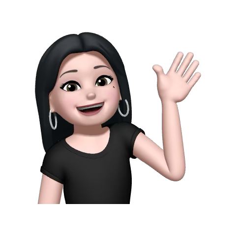
VIVID ← · → ON;
Selected Works
2개 프로젝트Brand & Social Content
SNS 콘텐츠 · 홍보 숏폼 · 채널 운영DIGGING MAGAZINE
디지털 매거진 ‘디깅’의 프리랜서 에디터로, 부산·제주의 로컬 소재를 발굴해 20대 타깃의 인스타그램 카드뉴스로 제작합니다. 소재 리서치부터 카피라이팅, 이미지 셀렉, 레이아웃 편집까지 직접 담당합니다.
As a freelance editor for DIGGING, a digital magazine, I find local stories in Busan and Jeju and turn them into Instagram card news for people in their 20s, from research and copywriting to image curation and layout.
- 01DISCOVER지역 소재를 리서치하고 트렌드를 파악합니다
- 02SELECT시즌성·지역성·후킹 가능성을 기준으로 소재를 선정합니다
- 03RESEARCH실제 방문 후기·정보를 교차 확인합니다
- 04DEVELOP카드뉴스 카피와 구성을 기획합니다
- 05CREATE레이아웃을 편집해 발행합니다
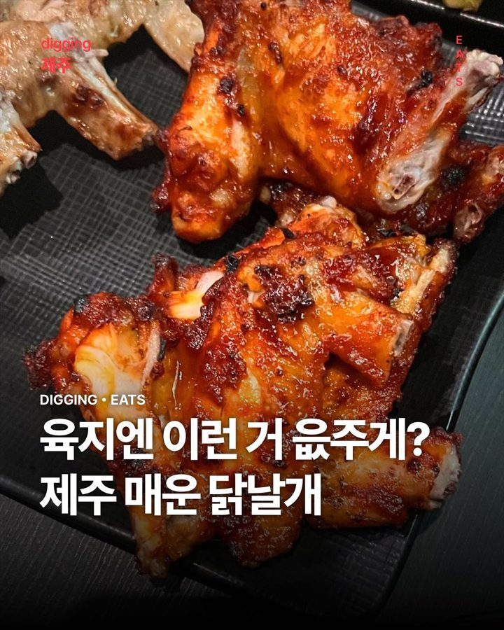
제주 매운닭날개, 발견하는 콘텐츠
- QUESTION
- 제주 여행 콘텐츠는 넘치는데, “진짜 로컬이 가는 곳”은 왜 항상 뻔하게 느껴질까?
- DISCOVERY
- 원도심 매운닭날개 맛집이 SNS보다 지역 커뮤니티·리뷰에서 먼저 화제라는 것을 확인하고, 네이버 방문자 리뷰와 업체 계정 게시물로 교차 검증했습니다.
- STRATEGY
- 여행객에게 생소한 로컬 먹거리라는 점에 주목해 썸네일부터 ‘매운맛’ 하나로 각인시키고, 사진을 재구성해 분위기와 매운 정도를 한눈에 전달했습니다.
“너무 감사합니다❤”소개한 업체의 공식 계정 댓글
부산 사우나, 재해석하는 콘텐츠
- IDEA
- 여름엔 시원한 곳만 찾는다는 통념을 뒤집어 “이열치열”로 부산 사우나·찜질방을 여름 콘셉트로 묶었습니다.
- EXECUTION
- “이열치열 부산 사우나 모음 8” 리스티클로 구성했습니다.
Selected Contents · 디깅
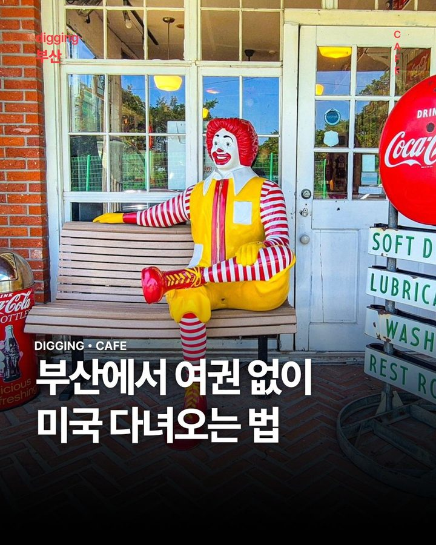
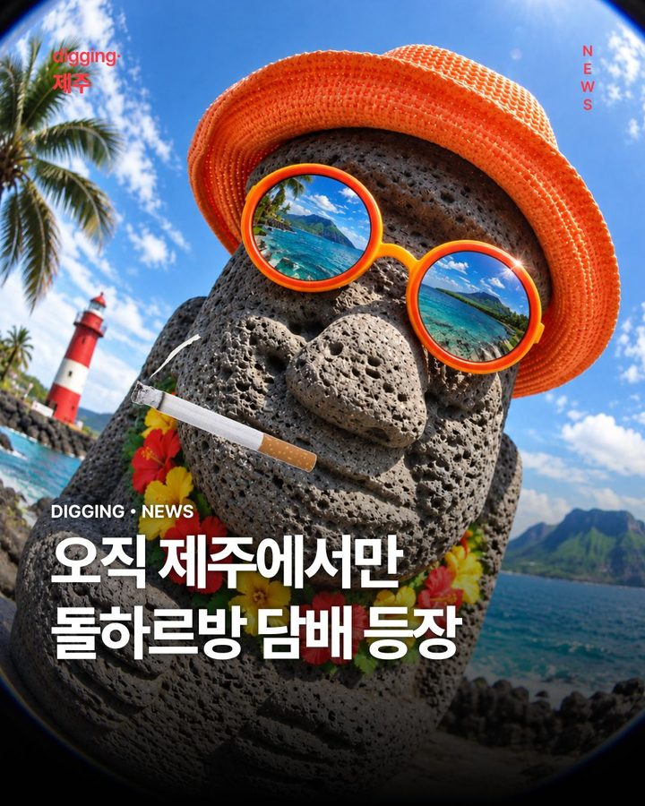
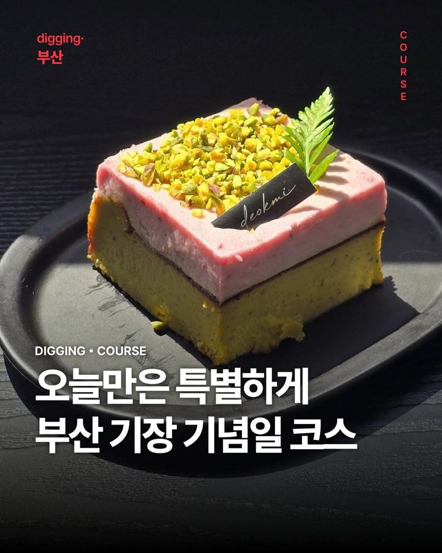
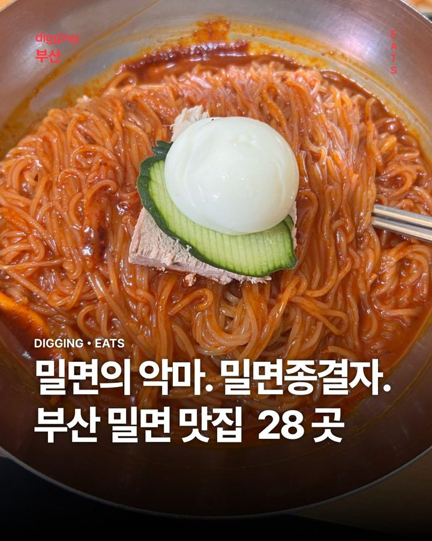
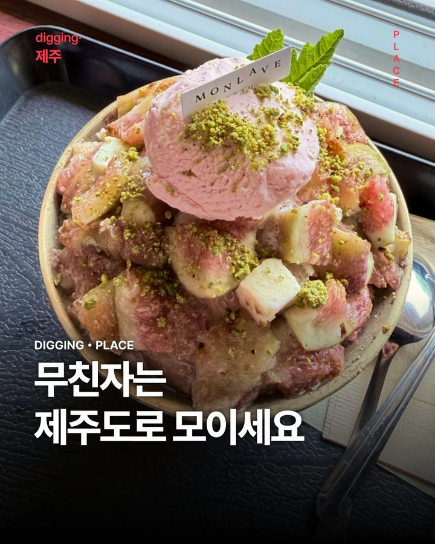
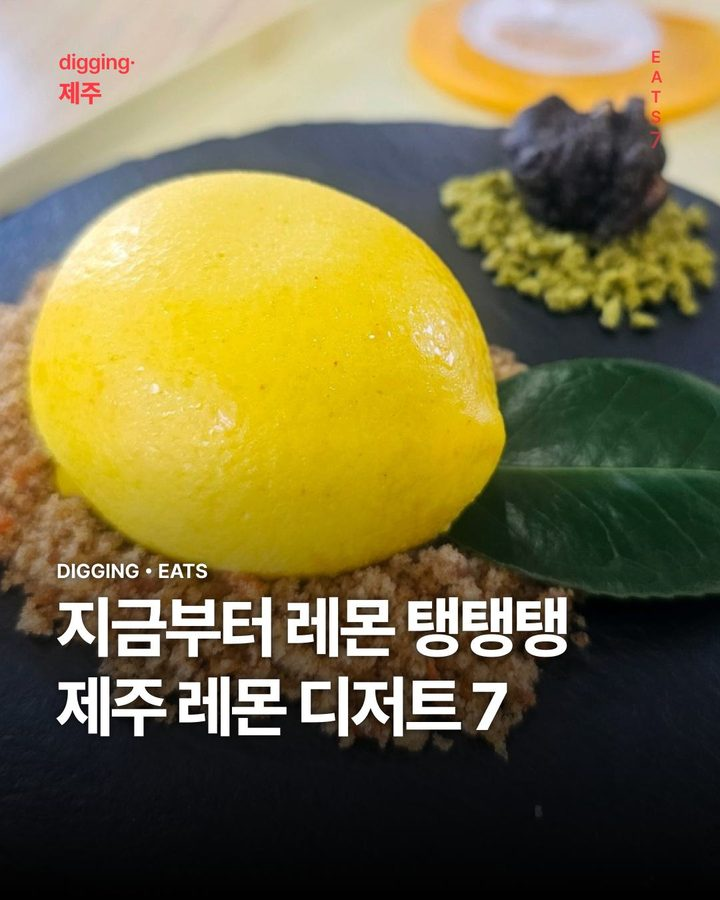
고흥 고향사랑기부 답례품 홍보 숏폼
Promotional short-form for Goheung’s hometown-donation gift program
삼쩜삼 고향사랑기부제 서포터즈 · 1인 제작지역 답례품을 소개하는 SNS용 세로형 홍보 영상입니다. 기획부터 촬영, 편집, 그래픽 모션까지 혼자 제작했습니다.
- 기획 · 촬영 · 편집 · 모션그래픽
- Planning · Filming · Editing · Motion Graphics
NIKKODDONG ARCHIVE @nikkoddong_archive
서브컬처의 이야깃거리를 발굴해 카드뉴스로 만드는 개인 채널입니다.
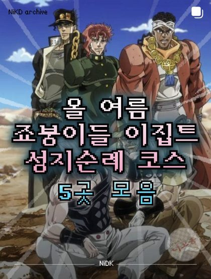
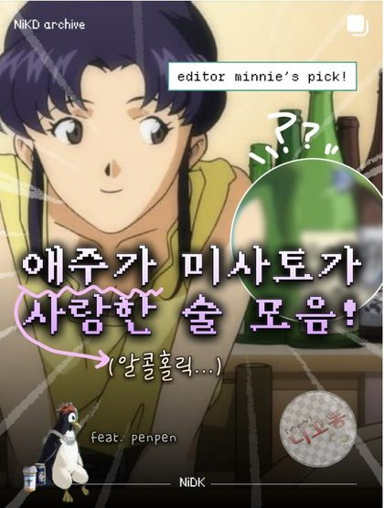
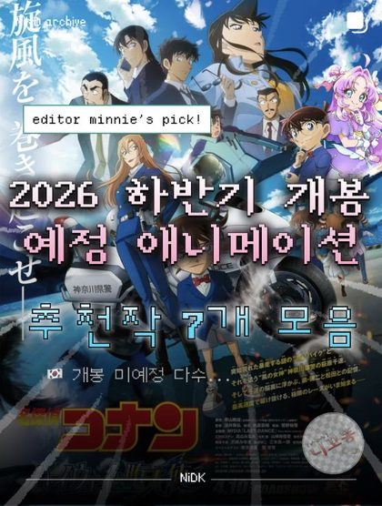
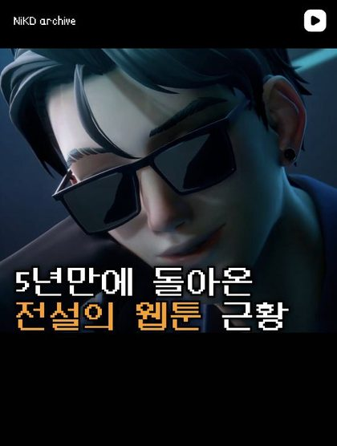
MY FAVORITE ARCHIVE @myfav_oritearch
좋아하는 음악을 숏폼으로 큐레이션하는 개인 채널입니다.
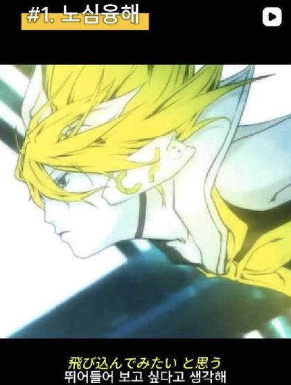
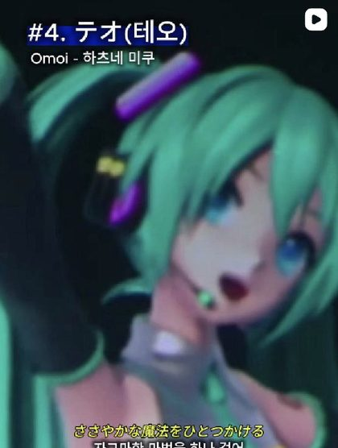
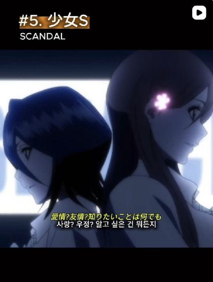
VIVID
Z세대를 위한 라이프스타일 공유 서비스
Lifestyle Analysis and Sharing Service for Generation Z
- 팀 Team
- 김려원, 김민, 박보경, 정인아
- 역할 Role
- 영상(GIF) 제작 · Motion브랜딩 · Branding리서치 · Research
Z세대는 여전히 자신에게 맞는 라이프스타일을 탐색하고 검증하는 과정에 있습니다. 그러나 일상 속 가전 사용 경험은 서로 연결되지 않아, 데이터가 개인의 생활 패턴으로 이어지지 못합니다. Vivid는 타인의 생활을 관찰하고 공유하며 직접 체험할 수 있는 플랫폼으로, 가전 데이터를 통합해 나에게 맞는 생활 방식의 방향을 제시합니다. 사용자는 다양한 비교와 선택을 통해 자신에게 맞는 방식을 만들어가며, 일상을 확장하고 지속 가능한 라이프스타일을 완성합니다.
Gen Z is still exploring which lifestyle fits them, yet their everyday appliance experiences stay disconnected, so the data never adds up to a picture of how they live. VIVID is a platform for observing, sharing and trying out other people’s lifestyles. It brings appliance data together to suggest a way of living that fits each user, who then compares, chooses and builds a sustainable lifestyle of their own.
VIVID 서비스 모션그래픽
집 유형 토큰부터 리포트와 공유 단계까지, Vivid의 서비스 흐름을 세로형 모션그래픽 한 편으로 정리했습니다.
- 유형별 집 토큰 모션
- 단계별 서비스 흐름 설명
- 세로형 1분 4초
16가지 집 유형
유형 테스트로 가전 사용 습관에서 드러나는 나의 라이프스타일을 찾습니다.
나를 담은 작은 집, 토큰
발견한 유형은 물리적 토큰으로 제공되어 나의 데이터를 저장합니다.
토큰으로 나누는 일상
친구와 토큰을 교환하며 서로의 라이프스타일을 체험합니다.
App & Hub Motion
토큰 인식부터 친구 추천, 가전 찜까지 서비스 흐름을 모션으로 만들었습니다. 스크롤하면 옆으로 넘어갑니다.
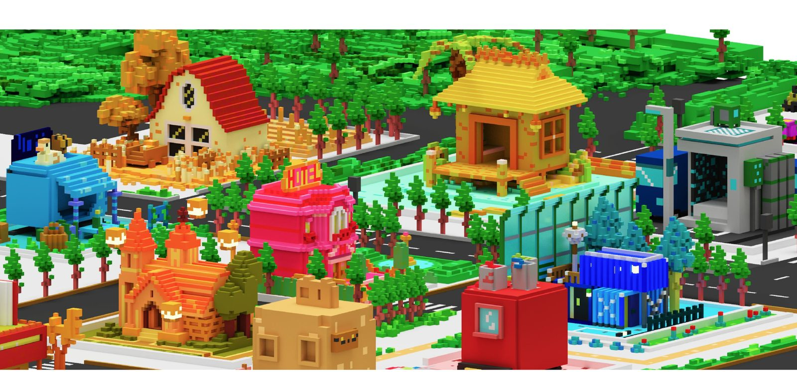
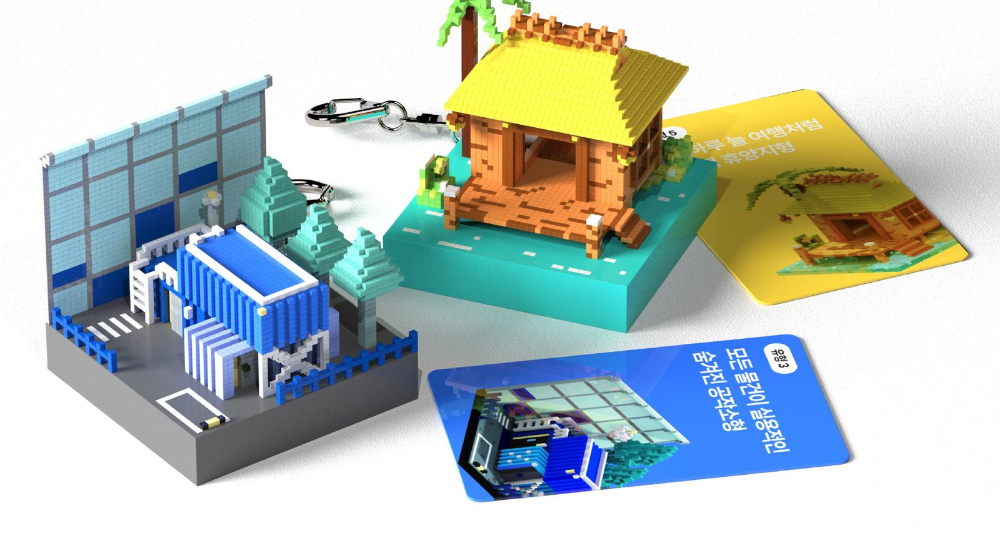
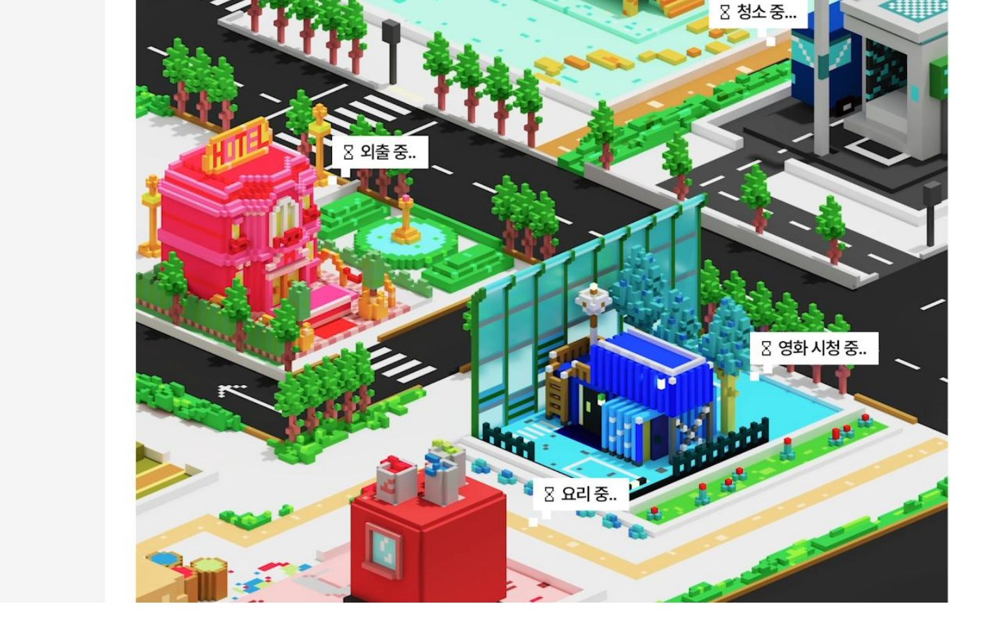
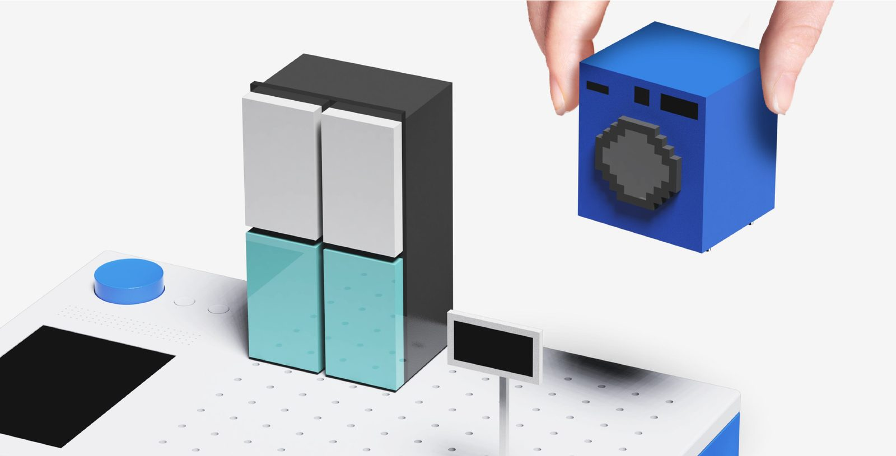
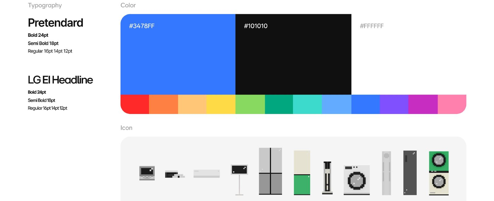
ON;
인생 2막을 위한 AI 온·오프라인 서비스
An AI On–Offline Service for Life’s Second Chapter
- 팀 Team
- 김민, 박보경
- 역할 Role
- 영상(GIF) 제작 · Motion브랜딩 · Branding리서치 · Research
ON;은 은퇴가 아닌 퇴직 이후의 ‘공백기’를 겪는 4060 세대를 위한 AI 온·오프라인 서비스입니다. 사용자는 AI를 통해 과거의 삶을 기반으로 한 맞춤형 제안을 받고, 모바일 앱과 오프라인 공간을 오가며 실질적인 재취업 준비를 경험합니다. ON;은 이 공백기를 단절의 시기가 아닌, 다시 세상과 연결되는 전환의 시간으로 바라봅니다.
ON; is an AI-powered online/offline service for people in their 40s–60s facing the gap after leaving a long-held job. AI offers suggestions based on each user’s past career and life, and users prepare for re-employment by moving between a mobile app and physical spaces. ON; treats this gap not as a break, but as a transition back into the world.
공간 속 AI 기기
ON; 공간에 놓인 개인 비서 기기로 앱과 오프라인 활동을 잇습니다.
카드를 꽂으면
카드를 인식하면 나의 정보가 기기로 전달됩니다.
나의 ON; 활동
오늘의 일정과 준비 중인 인생 2막 활동이 화면에 열립니다.
Service Motion
AI 상담, 맞춤 정보, 지원 관리까지 앱과 기기 화면을 모션으로 보여줍니다.
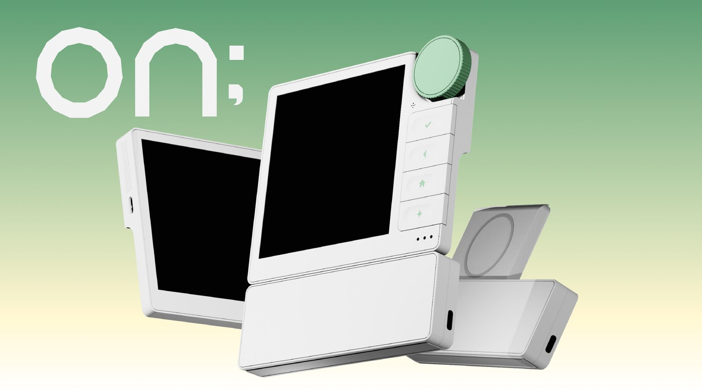
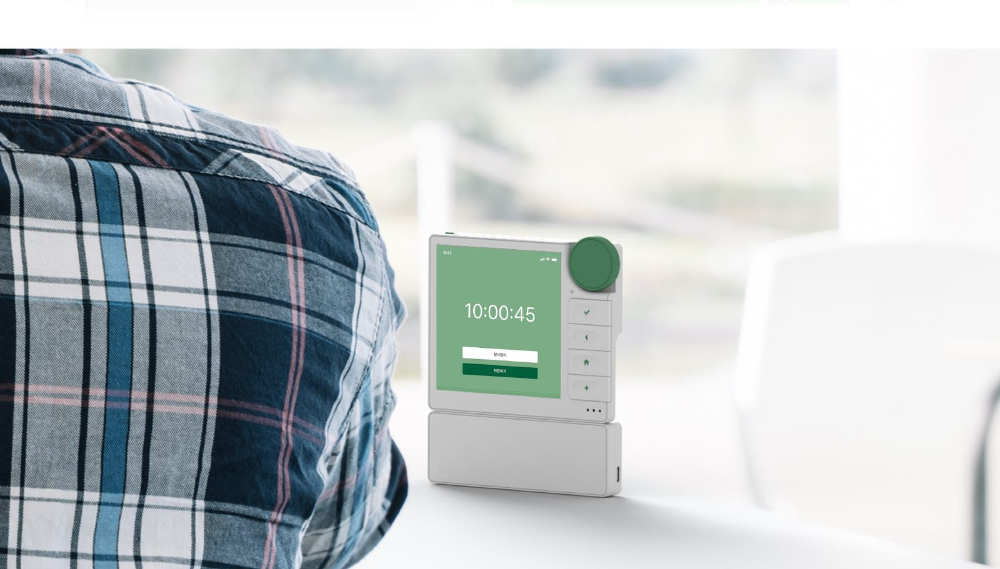
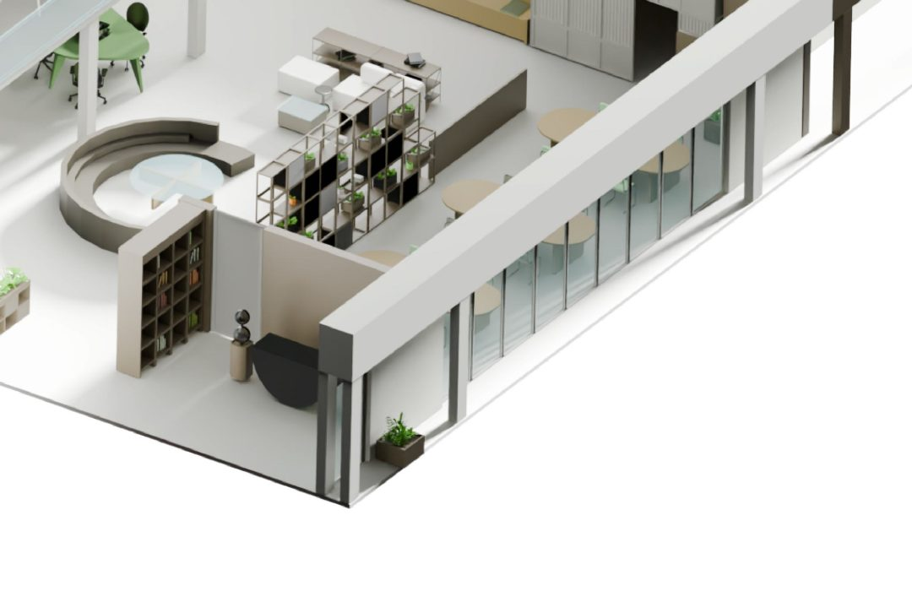
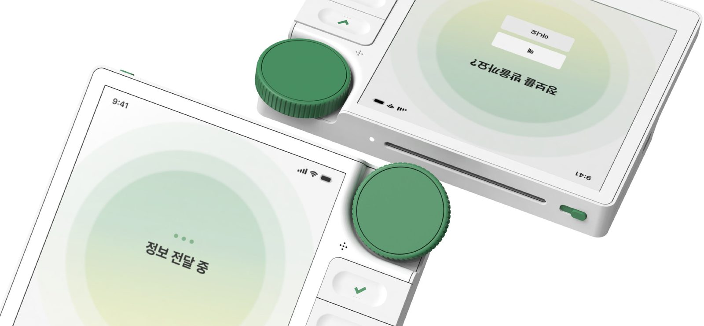
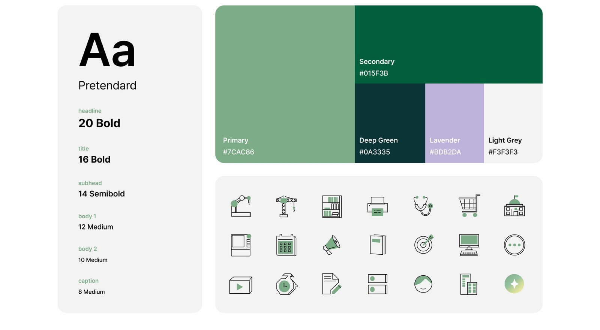
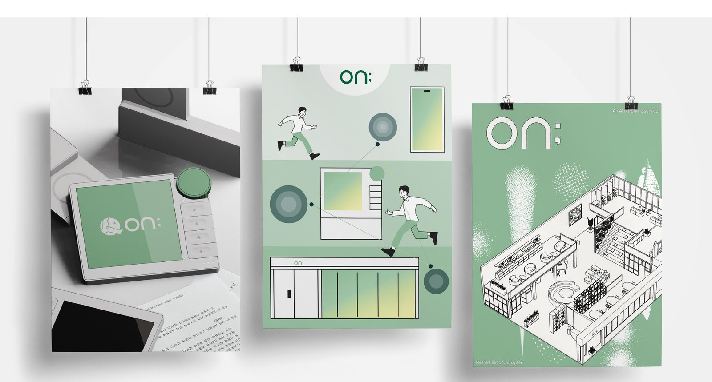
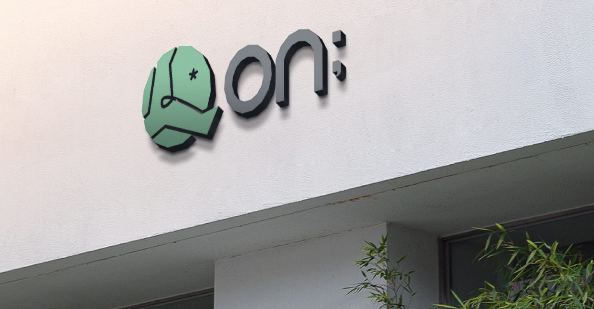
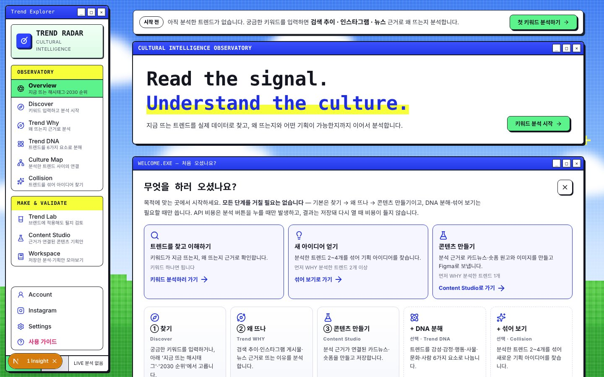
TREND RADAR
Cultural Intelligence — From trends to cultural insights
한국 2030의 트렌드를 검색 트렌드·인스타그램 해시태그·유튜브 데이터로 찾고, 왜 뜨는지 해석한 뒤 카드뉴스·숏폼 기획과 Figma 제작까지 이어주는 웹 서비스입니다.
- Trend WHY · Trend DNA · Culture Map으로 트렌드 해석
- Content Studio에서 카드뉴스·숏폼 기획안 작성
- Y2K 픽셀 데스크톱 콘셉트의 UI 디자인
- Built in VS Code with Claude & Codex (AI-assisted coding)
Additional Short-form
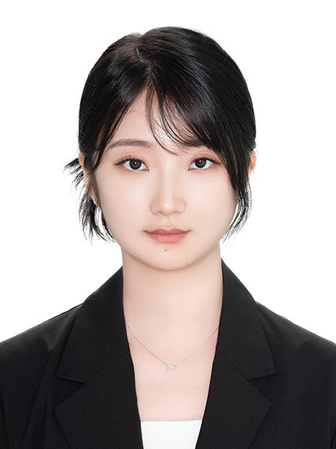
김민
Kim Min — Graphic & Video Designer
Experience디깅 매거진 DIGGING Magazine — 프리랜서 콘텐츠 에디터 (2026.06–)
부산·제주 로컬 SNS 카드뉴스 기획·제작: 리서치, 카피라이팅, 이미지 셀렉, 레이아웃 편집
삼쩜삼 고향사랑기부제 서포터즈
고흥 답례품 홍보 숏폼 기획·촬영·편집
Channels@nikkoddong_archive · @myfav_oritearch
ToolsPhotoshop · Illustrator · Premiere Pro · CapCut · Blender · Rhino
AI — Midjourney · ChatGPT · Claude · Codex
WebTREND RADAR — VS Code에서 Claude·Codex로 기획·제작·배포한 트렌드 분석 웹 서비스
Education고려대학교 산업디자인 · 미디어 복수전공 (2020.03–2026.02)
Korea University — Industrial Design, double major in Media
TrainingAX(AI Transformation) 교육 과정 (6개월)
LanguageKorean (native) · English — TOEIC Speaking AL (2026.07)
VIVID
김려원
김민
박보경
정인아
ON;
김민
박보경
VIDEO · BRANDING · RESEARCH
김민